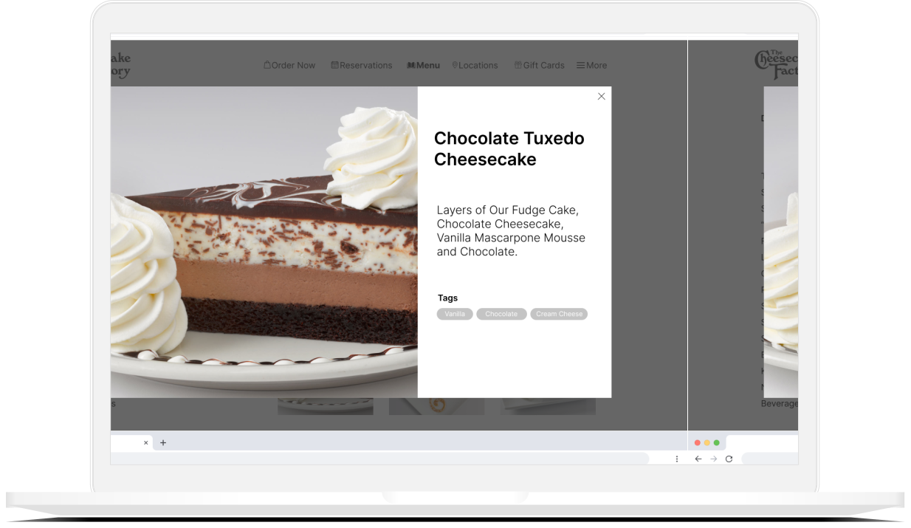
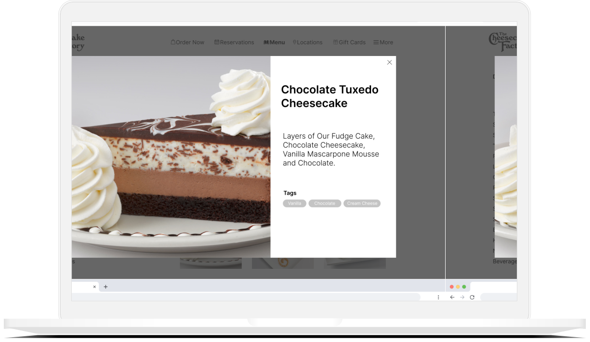

Overview
This was a personal 1-week project where the challenge was to redesign the layout of a website to better suit a particular audience's needs. The users I focused on were new customers not familiar with the Cheesecake Factory's online menu. Because the interface for the current online menu lacks sufficient information for new customers, I redesigned the menu section to include features to help users navigate the menu.
Challenge
How can users order food more efficiently from this website?
Design Process

Empathize
The first issue with the current information architecture is that there are too many choices displayed in the online menu. As stated by Hick's Law, as the number of options increase, the time needed to respond or execute an action increases. This results in an especially poor user experience when the customer is hungry, and this situation can even lead to frustration.
The second issue is that the current menu layout contains numerous items nested under many different layers. This results in the user needing to click many times in order to reach important information on every item (such as images and food descriptions). In order to better understand user pain points within their experience interacting with the menu, I created a user journey map:
Define
After understanding where user pain points were during the interaction process, I defined several key user needs and goals by creating a persona:
Ideate
To address user needs, I brainstormed potential features to add so that the interface is optimized for both quick ordering and exploring menu items:
Prototype
To implement a solution for an improved user experience, I sketched out the design and created low-fidelity and high-fidelity prototypes with Figma. I used a grid layout instead of the list-based information architecture on the current website. This new layout provides images and summarizes important information for each item without the user needing to scroll or click numerous times. This is especially important for new customers since they want to see what each dish looks like before ordering takeout.
I also included a "Popular Right Now" section to give new users a sense of which menu items are frequently ordered by others, which gives them an idea of what they might want to order if they have trouble deciding. In addition, a I implemented a new sidebar containing a dropdown list of menu items for easy navigation. This sidebar allows users to look at each section of the menu without having to go back to a webpage dedicated for each section.

Final Product
 

Key takeaways
- I learned the importance of how a specific target audience can drive design choices and the types of design features that are implemented
- I sharpened my wireframing skills in Figma
- Most importantly, I was able to gain experience in empathizing with users and understanding their pain points during a particular interaction